用紙をセットする
使用するオプションや用紙に応じた用紙のセット方法および交換方法を説明します。
手順は動画でも確認できます。
- ロール紙のセット（標準）
- ロール紙のセット（カッタ）
- ロール紙のセット（ロータリーカッタ）
- ロール紙のセット（ノンセパカッタ）
- ファンフォールド紙のセット（標準）
- ファンフォールド紙のセット（カッタ）
- ファンフォールド紙のセット（ロータリーカッタ）

- 使用できる用紙については、用紙を参照してください。
- リボンを使用せずに印字する場合は、感熱紙を使用してください。
ハクリユニットを使用している場合は、用紙をセットする（ハクリ使用時）で手順を確認してください。
- トップカバーを開きます。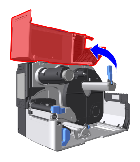

- トップカバーは、誤って落ちてこないよう、上までしっかりと開けてください。
- ヘッドロックレバーを後方に倒します。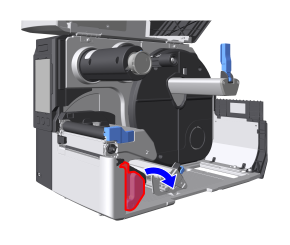
- 印字完了直後は、サーマルヘッドとその付近が熱くなっています。火傷をしないように注意してください。
- サーマルヘッドの端に素手で触れると、ケガをするおそれがあります。
- ロール紙ホルダーガイドを倒し、ロール紙ホルダーの先端までスライドさせます。
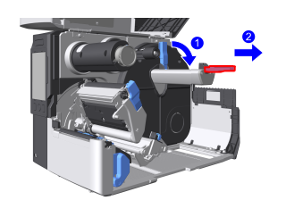
- 用紙ガイドを広げます。
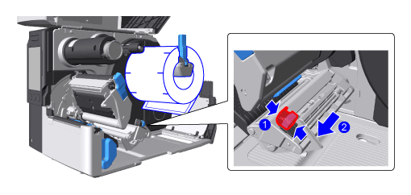
- 印字面が上になるように用紙をセットします。
ロール紙 ファンフォールド紙 - ロール紙ホルダーに奥までセットします。
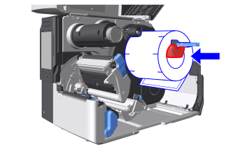
図は裏巻きロール紙
- ロール紙ホルダーガイドを用紙の幅に合わせて調整し、上に起こします。
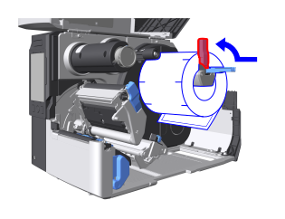
本製品の背面または底面からセットします。
ファンフォールド紙は平らな場所に置いてください。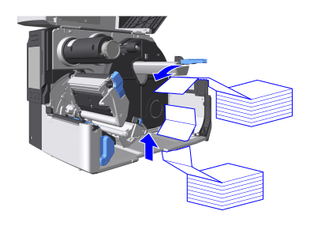
- 底面からファンフォールド紙をセットして用紙詰まりが頻繁に発生する場合は、背面からファンフォールド紙をセットしてください。
- ロール紙ホルダーに奥までセットします。
- 用紙をダンパとセンサガイドの下に通します。
用紙の端は本体奥側に触れるようにしてください。
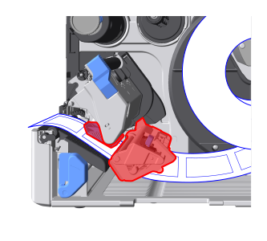 - 用紙排出口に用紙を通します。
標準 カッタ
ノンセパカッタ
ロータリーカッタ
用紙頭出しセンサの下を通し、用紙の先端が用紙排出口から少し出るまで引き出します。

用紙の先端が用紙排出口から少し出るまで引き出します。
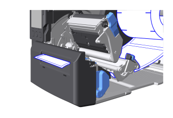
図はカッタユニット
- カッタ使用時は、カッタの刃に触れないように注意してください。

- 用紙無駄なし機能を有効にしている場合は、用紙の先端が用紙排出口から出すぎているとエラーになります。
用紙の先端を用紙排出口に揃えてください。
- 「カチッ」と音がするまで、サーマルヘッドを押し下げます。
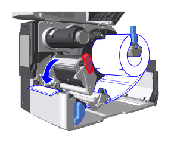
- 用紙の幅に合わせて用紙ガイドの位置を調整します。
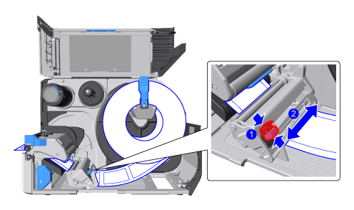- 用紙をセットし終えると、経路は下図のようになります。
ロール紙 ファンフォールド紙 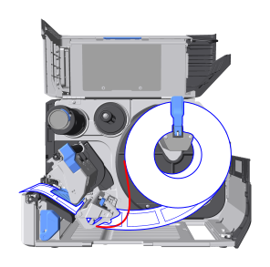
裏巻きロール紙
表巻きロール紙
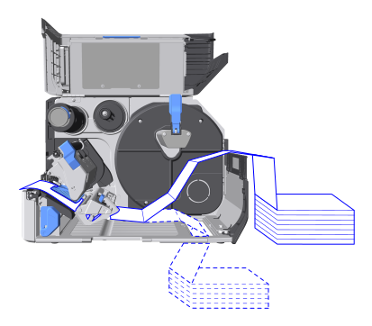
背面からセットする場合の経路
底面からセットする場合の経路
- 用紙をセットし終えると、経路は下図のようになります。
- トップカバーを閉じます。
- トップカバーを閉じるときは、指を挟まないように注意してください。
- 用紙を印字開始位置に合わせ、オンライン状態に切替えます。
用紙無駄なし機能が有効の場合ボタンを押してオンライン状態に切替わるときに、用紙の位置が自動で調整されます。
用紙無駄なし機能が無効の場合 ボタンを押して用紙を送ってから ボタンを押して、オンライン状態に切替えます。
ボタンを押して用紙を送ってから ボタンを押して、オンライン状態に切替えます。

- ノンセパラベルを長時間印刷に使用しない場合はサーマルヘッドを開け、ノンセパラベルをプラテンローラーからはがしてください。ノンセパラベルがセットされた状態で長時間サーマルヘッドを閉じたままにすると、用紙詰まりが起こることがあります。
用紙を交換するには
- ロール紙ホルダーガイドを倒し、用紙を取り外します。
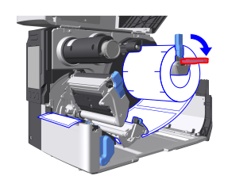